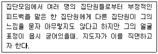
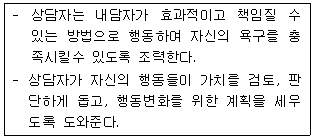
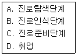
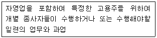
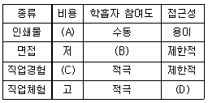
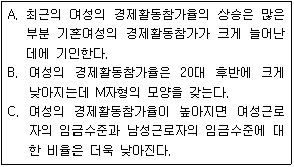

직업상담사-2급 (2010-03-07 기출문제)
1과목: 직업상담학
1. 진로상담 이론과 각 이론의 전제를 짝지은 것으로 틀린 것은?
- 특성-요인이론(Trait-factor Theory) : 개인은 자신의 성격에 맞는 직업을 찾아야 만족한다.
- 의사결정이론(Decision making Theory) : 개인은 자신의 이익을 극대화하는 방향으로 합리적인 결정을 할 수 있다 .
- 사회학습이론(Social learning Theory) : 개인의 발달은 사회경제적 지위, 교육정도, 주변의 기대 등에 영항을 받지 않을 수 없다.
- 정신분석이론(Psychoanalytic Theory) : 개인의 진로는 6세 이전에 결정된다.
(정답률: 61%)

2. 다음 중 전화상담의 특징과 가장 거리가 먼 것은?
- 상담관계가 안정적이다.
- 응급상황에 있는 내담자에게 도움을 준다.
- 청소년의 성문제 같은 사적인 문제를 상당하는데 좋다
- 익명성이 보장되어 신문노출을 꺼리는 내담자에게 적절 하다 .
(정답률: 86%)
3. 다응 중 집단직업상담에 관한 설명으로 틀린 것은?
- 각 구성원은 집단 직업상담 과정에서 이루어진 토의내용에 대한 비밀을 유지해야 한다
- 집단의 리더는 집단상담과 직업정보에 대해 잘 알고 있는 사람이어야 한다.
- 6명에서 10명 정도의 인원이 이상적이다.
- 가능한 모임의 횟수를 최대화하여야 한다.
(정답률: 86%)
4. 다음은 내담자의 무엇을 사정하기 위한 것인가?
- 내담자의 동기
- 내담자의 역할관계
- 내담자의 가치
- 내담자의 흥미
(정답률: 76%)
5. 직업상담의 기초 기법에 관한 설명으로 틀린 것은?
- 적극적 경청 : 내담자의 내면적 감정을 반영하는 것으로 이를 통해 내담자의 감정을 충분히 이해하고 수용할 수 있다
- 명료화 : 내담자의 말 속에 포함되어 있는 불분명한 측면을 상담자가 분명하게 밝히는 반응이다.
- 수용: 상담자가 내담자의 이야기에 주의를 집중하고 있고, 내담자를 인격적으로 존중하고 있음을 보여 주는 기법 이다
- 해석 : 내담자가 새로운 방식으로 자신의 문제들을 볼 수 있도록 사건들의 의미를 설정해 주는 것이다.
(정답률: 52%)
6. 다음 중 실존주의 상담 혹은 실존치료에 관한 설명으로 틀린 것은?
- 인간본질에 대한 결정론적인 입장을 취한다.
- 자유와 책임을 강조한다.
- 개인이 겪는 불안은 하나의 삶의 조건이라고 본다.
- 개인이 자기 인식 능력을 강조한다.
(정답률: 58%)
7. 다음 중 인지적-정서적 상담(RET)에 관한 설명으로 틀린 것은?
- ElliS에 의해 개발되었다.
- 모든 내담자의 행동적-정서적 문제는 비논리적이고 비합리적인 사고에서 발생한 것이다.
- 성격 자아상태 분석을 실시한다.
- A-B-C 이론을 적용한다.
(정답률: 60%)
8. 다음 중 상담의 목표설정 과정에 관한 설명으로 틀린 것은 ?
- 전반적인 목표는 내담자의 욕구들에 의해 결정 된다
- 현존하는 문제를 평가하고 나서 목표설정 과정으로 들어간다.
- 상담자는 목표설정에 개입하지 않는다.
- 내담자의 목표를 끌어내기 위한 기법에는 면접안내가 있다 .
(정답률: 75%)
9. Crites가 분류한 흥미와 적성에 따른 사람의 유형 중 재능(가능성)이 많아 흥미를 느끼는 직업들과 적성에 맞는 직업들 사이에서 결정을 내리지 못하는 사람은?
- 부적응형
- 우유부단형
- 다재다능형
- 비현실형
(정답률: 84%)
10. 다음 중 행동주의적 직업상담에서 사용하는 기법이 아닌 것은?
- 체계적 둔감화
- 역조건형성
- 사회적 모델링
- 충고와 설득
(정답률: 70%)
11. 다음 중 인지치료와 관련이 없는 개념은?
- 비합리적 신념
- 치료적인 논박과정
- 내담자-상담자의 협력적인 관계
- 전이 관계의 촉진
(정답률: 59%)
12. 다음 사례에서 직면기법에 가장 가까운 반응은?

- ”OO씨, 지금 느낌이 어떤가요?”
- ”OO씨가 방금 아무렇지도 않다고 하는 말이 어쩐지 믿기지 않는군요.”
- ”OO씨, 내가 만일 OO씨처럼 그런 지적을 받았다면 기문이 몹시 언짢겠는데요.”
- ”OO씨는 아무렇지도 않다고 말하지만, 지금 얼굴이 아주 굳어있고 목소리가 떨리는군요. 내적으로 지금 어떤 불편한 감정이 있는 것 같은데, OO씨의 반응이 궁금하군요
(정답률: 82%)
13. 직업상담에서 내담자가 검사도구에 대해 비현실적 기대를 가지고 있을 때 상담자가 취할 수 있는 행동으로 가장 적합한 것은?
- 즉시 검사를 실시한다.
- 검사 사용 목적에 대하여 내담자에게 설명한다.
- 검사종류의 선택을 독단적으로 한다.
- 심리검사는 상담관계를 방해하므로 실시하지 않는다.
(정답률: 83%)
14. 직업상담이론과 그에 대한 설명을 짝지은 것으로 틀린 것은 ?
- 교류분석적 상담 - 성격 자아상태 분석
- 내담자 중심 상담 - 비지시적 상담
- Adler의 개인주의 상담 - 심리성적 결정론
- 형태주의 상담 - Perls에 의해 발전
(정답률: 74%)
15. 직업상담의 이론 중 내담자에 대한 자료를 과학적으로 수집하고 분석하기 위해 흥미, 지능, 적성, 성격 등 표준화 검사의 실시와 결과의 해석을 중요시하는 직업상담은 ?
- 정신역동적 직업상당
- 내담자 중심 직업상담
- 특성-요인 직업상담
- 발달적 직업상담
(정답률: 67%)
16. 다음 중 직업상담자의 윤리에 관한 설명으로 가장 적합한 것은?
- 직업상담자는 내담자 개인 및 사회에 임박한 위험이 있다고 판단되더라도 개인정보와 상담내용에 대한 비밀을 유지해야 한다.
- 직업상담자는 자신이 실제로 갖추고 있는 자격 및 경험의 수준을 벗어나는 인상을 주어서는 안 된다.
- 직업상담은 심층적인 심리상담이 아니므로 비밀 유지 의무가 없다.
- 직업상담자는 내담자가 상담을 통해 도움을 받지 못하더라도 먼저 종결하려고 해서는 안 된다.
(정답률: 72%)
17. 내담자의 침묵에 관한 설명으로 틀린 것은?
- 상담자 개인에 대한 적대감에서 오는 저항이나 불안 때문에 생긴다.
- 상담관계가 이루어지기도 전에 일어난 침묵은 대개 긍정적이며 수용의 형태로 해석될 수 있다.
- 내담자가 상담자에게서 재확인을 바라거나 상담자의 해석 등을 기대하며 침묵에 들어가는 경우이다.
- 내담자가 이전에 표현했던 감정 상태에서 생긴 피로를 회복하고 있다는 뜻이기도 하다.
(정답률: 73%)
18. 다음 중 직무만족 및 작업동기에 관한 설명으로 옳은 것 은 ?
- Holland는 직무만족이나 안정성이 직무의 특성과 작업환경간의 상호작용에 달려 있다고 보았다.
- Maslow는 상위욕구가 좌절되면 이미 충족된 하위욕구에 대한 동기화가 다시 일어난다고 주장했다.
- Alderfer는 인간의 욕구를 존재욕구, 관계욕구, 성장욕구로 나누었다.
- Herzberg는 직무만족을 주는 동기요인이 충족되지 않으면 직무불만족이 생긴다고 주장했다.
(정답률: 42%)
19. Rogers가 제시한 직업상담자가 갖추어야 할 태도에 포함되지 않는 것은?

- 진실하고 개방적인 자세
- 내담자의 입장에 대한 동감과 이해
- 자신의 감정에 대한 진실성 및 일관된 표현
- 내담자의 감정을 존중하고 수용하는 태도
(정답률: 44%)
20. 다음 중 생애진로사정(Life Career Assessment)에 관한 설명으로 틀린 것은?
- 생애진로사정은 Adler의 개인 심리학에 이론적 기초를 두고 있다.
- 생애진로사정의 구조는 진로사정, 전형적인 하루, 강점과 장애 및 요약으로 이루어진다.
- 생애진로사정은 직업상담의 마무리 단계로서 최종 결론을 도출하기 위한 시도이다.
- 생애진로사정은 구조화된 면담기술로서 짧은 시간에 체계적인 정보를 수집할 수 있다.
(정답률: 80%)
2과목: 직업심리학
21. 한 검사에서의 점수와 나중에 그 사람이 실제로 직무를 수행할 때의 수행수준 간의 관련성이 높을 때 어떤 그 검사는 타당도가 높다고 하는가?
- 구성타당도
- 내용타당도
- 예언타당도
- 동시타당도
(정답률: 73%)
22. 다음 중 진로교육을 실시하기 위한 지도단계를 바르게 나열한 것은 ?

- A → B → C → D
- B → A → C → D
- B → C → A → D
- A → C → B → D
(정답률: 67%)
23. 경력개발단계를 성장, 탐색, 확립, 유지, 쇠퇴의 5단계로 구분한 사람은?
- Bordin
- Colby
- Super
- Parsons
(정답률: 78%)
24. 스트레스와 직무수행의 관계에 관한 설명으로 가장 적합한 것은?
- 스트레스가 높아질수록 수행실적도 함께 증가한다.
- 스트레스 수준이 아주 낮으면 수행실적이 증가한다.
- 스트레스는 직무만족에 직접적인 영항을 준다.
- 지각이나 결근은 스트레스와는 상관이 없다.
(정답률: 68%)
25. 직업적성검사 중 다양한 직업에 필요한인간의 능력을 9가지 영역으로 구분하여 측정하는 것은?
- 미네소타 직업평가척도(MORS)
- 직 업 선호도 검사(VPI)
- 일반적성검사(GATB)
- 마이어 - 브릭스 유형검사(MBTI)
(정답률: 58%)
26. 국내기업에서 실시하고 있는 임금성과급제 또는 연봉제 실시와 관련하여, 공정하고 객관적인 임금수준을 결정하기 위해서 직장 내 여러 직무들 각각이 조직효율성에 기여하는 상대적 가치를 판단하도록 해주는 것은?
- 직무분석
- 직무평가
- 직무수행평가
- 준거개발
(정답률: 61%)
27. 다음 중 인지적 정보처리의 주요 전제에 해당하지 않는 것은?
- 진로선택은 인지적 및 정의적 과정들의 상호작용의 결과이다.
- 진로를 선택한다는 것은 하나의 문제해결 활동이다.
- 진로성숙은 진로문제를 해결할 수 있는 자신의 능력에 의존하지 않는다.
- 진로문제해결은 고도의 기억력을 요하는 과제이다.
(정답률: 56%)
28. 직무분석 기업 중 직무수행자의 직무 행동 가운데 성과와 관련하여 효과적인 행동과 비효과적인 행동을 구분하여 직무를 분석하는 방법은?
- 작업 수행 조사 체계(WPSS)
- 중요사건 기록법(CIT)
- 강제 선택 체크리스트(FCCL)
- 기능적 직무분석(DPT)
(정답률: 63%)
29. 작업동기와 관련된 이론 중 집단의 영향을 강조하고 타인에 대한 지각을 중시하며, 행동이 활성화되고 유지되는 과정을 이해하는 데 초점을 둔 것은?
- Maslow의 욕구위계이론
- Alderfer의 존재, 관계성, 성장(ERG) 이론
- Vroom의 기대-유인가 이론
- Adams의 형평성 이론
(정답률: 35%)
30. 다음 중 구성타당도를 평가하는 방법에 해당하지 않는 것은?
- 수렴타당도
- 변별타당도
- 요인분석
- 공인타당도
(정답률: 59%)
31. 직업을 전환하고자 하는 내담자에게서 반드시 우선적으로 탐색해야하는 것은?
- 변화에 대한 인지능력
- 새로운 직업에서 성공기대 수준
- 직업상담에 대한 기대
- 기존에 가지고 있던 직업에 대한 애착 수준
(정답률: 72%)
32. 다음 중 개인관련 스트레스 요인인 A유형 행동을 보이는 사람의 특성에 해당하지 않는 것은?
- 책임을 피한다.
- 쉽게 화를 낸다.
- 많은 일을 성취하려 한다.
- 늘 경쟁적 성취욕으로 가득 차 있다.
(정답률: 71%)
33. 다음 중 심리검사의 규준에 관한 설명으로 틀린 것은?
- 규준이란 한 개인의 점수를 다른 사람들의 점수와 비교할 때, 비교가 되는 점수를 뜻한다.
- 한 개인의 점수가 70점일 때, 이 점수보다 낮은 점수를 받은 사람들이 전체의 60%라면, 백분위 점수는 60점이다.
- 평균이 50점이고 표준편차가 10점인 표준점수체계에서, 한 개인의 점수가 70점이라면 상위 20%에 해당한다.
- 연령규준은 한 개인의 검사 점수를 규준 집단에 있는 사람들의 연령과 비교해서 몇 살에 해당되는지를 해석하는 규준을 뜻한다.
(정답률: 54%)
34. 심리검사의 유형과 그 예를 짝지은 것으로 틀린 것은?
- 직업흥미검사-VPI
- 직업적성검사 -AGCT
- 성격검사 –CPI
- 직업상황검사 –In basket test
(정답률: 50%)
35. Holland의 육각 모형 상에서 대각선에 해당되는 유형으로, 서로 대비되는 특성을 지닌 유형들이 바르게 짝지어진 것은?
- 관습형(C)과 현실형(R)
- 사회형(S)과 탐구형(l)
- 현실형(R)과 진취형(E)
- 예술형(A)과 관습형(C)
(정답률: 69%)
36. 내담자의 직업능력을 파악하기 위해 검사도구를 사용하고자 할 때 가장 우선적으로 해야 할 일은?
- 내담자의 요구에 충족하는 검사가 개발되어 있는지 조사한다.
- 검사를 하고자 하는 내담자의 목적을 탐색한다.
- 해당 검사도구의 심리측정적 속성을 검토한다.
- 검사의 선택에 내담자를 포함시킨다.
(정답률: 67%)
37. 다음 중 생애주기를 분석할 때 중요하게 고려해야 하는 사항과 가장 거리가 먼 것은?
- 평균수명의 변화
- 초혼연령의 변화
- 잔여기간의 변화
- 직장선택의 변화
(정답률: 37%)
38. 다음 중 심리검사에 관한 설명으로 옳은 것은?
- Crites의 이론에 기초한 진로성숙검사는 태도척도와 능력척도로 구성되며 진로선택 내용과 과정이 통합적으로 반영되었다.
- 마이어스· 브릭스 유형검사(MBTI)는 외향성·내향성·호감성·성실성·정서적·불안정성·경험개방성의 6요인으로 구성되어 있다.
- 미네소타 다면적 인성검사(MMPI)에서 한 하위척도의 점수가 70점0|라는 것은 규준집단에 비추어볼 때 평균보다 한 표준편차 아래인 것을 의미한다.
- 진로발달검사의 경우 인간이 가진 보편적인 경향성을 측정하는 것이므로 미국에서 작성된 기존 규준을 우리나라에서 그대로 사용해도 무방하다.
(정답률: 61%)
39. 다음 중 직무 스트레스의 매개변인으로 볼 수 없는 것은?
- 성격의 유형
- 역할 모호성
- 통제의 위치
- 사회적 지원
(정답률: 49%)
40. Ginzberg의 진로발달 단계 중 현실기에 관한 설명으로 옳은 것은?
- 놀이중심의 단계이다.
- 일이 요구하는 조건에 대하여 점차로 인식하는 단계이다.
- 능력과 흥미의 통합단계이다.
- 현실에 적응하고 직업적 안정을 이루는 단계이다.
(정답률: 33%)
3과목: 직업정보론
41. 직업정보 수집 시의 유의점으로 틀린 것은?
- 명확한 목표를 세운다.
- 직업정보는 계획적으로 수립해야한다
- 자료를 수집하면 자료의 출처와 저자, 발행연도와 수집일자를 기입해야 한다.
- 수집한 정보는 항상 유효하기 때문에 불필요한 자료라도 별도 보관하여 활용하도록 한다.
(정답률: 73%)
42. 한국직업정보시스템에서 제공하는 학과정보 중 사회계열에 해당하지 않는 학과는?
- 경영정보학과
- 유통학과
- 종교학과
- 지리학과
(정답률: 49%)
43. 한국표준산업분류(2008)의 적용원칙에 관한 설명으로 틀린 것은?
- 생산단위는 산출물뿐만 아니라 투입물과 생산공정 등을 함께 고려하여 그들의 활동을 가장 정확하게 설명된 항목에 분류해야 한다.
- 복합적인 활동단위는 우선적으로 최상급 분류단계(대분류)를 정확히 결정하고, 순차적으로 중, 소, 세. 세세분류 단계 항목을 결정하여야 한다.
- 산업활동이 결합되어 있는 경우에는 그 활동단위의 주된 활동에 따라서 분류하여야 한다.
- 수수료 또는 계약에 의하여 활동을 수행하는 단위는 자기계정과 자기책임 하에서 생산하는 단위와 별도항목으로 분류되어야 한다.
(정답률: 66%)
44. 워크넷에서 제공하는 선호직종임금정보의 분류에 해당하지 않는 것은?(워크넷 개정전 문제로 현재 카테고리는 삭제되어 있으며 기존 정답은 1번 입니다. 여기서는 1번을 누르면 정답 처리 됩니다.)
- 성 별
- 연령별
- 학력별
- 청년, 청소년
(정답률: 72%)
45. 직업선택결정모형 중 처방적 직업결정모형은?
- 타이드만과 오하라(Tiedeman & O’Hara)의 모형
- 힐튼(Hilton)의 모형
- 브룸(Vroom)의 모형
- 카츠(Katz)의 모형
(정답률: 56%)
46. 다음 중 경제활동인구조사에서 사용하는 용어에 관한설명으로 틀린 것은?
- 15세 이상 인구 : 조사대상월 15일 현재 만 15세 이상인 자
- 경제활동인구 : 만 15세 이상 중 취업자와 실업자
- 취업자 : 조사대상 주간 중 수입을 목적으로 5시간 이상 일한 자
- 자영업자 : 고용원이 있는 자영업자 및 고용원이 없는 자영업자를 합친 개념
(정답률: 67%)
47. 한국직업사전(2009)의 부가직업정보에 해당되지 않는 것은 ?
- 직무기능(DPT)
- 숙련기간
- 자격/면허
- 직무개요
(정답률: 57%)
48. 한국표준직업분류(2007)의 대분류 중 관리자에 관한 설명으로 틀린 것은?
- 5개 중분류로 구성되어 있다.
- 관리자는 개개인이 수행하는 업무의 특성에 의한 것이 아니라 직위나 직급에 따라 분류되어야 한다.
- 현업을 겸할 경우에는 정책을 결정하고 관리, 지휘, 조정하는 데 직무시간의 80% 이상을 사용하는 경우에만 관리자 직군으로 분류한다.
- 관리자는 반드시 상당한 하부조직을 가져야 하며, 이러한 하부조직원의 업무를 지휘 및 조정하는 것이 주 업무인 경우에 해당된다.
(정답률: 50%)
49. 다음 중 실기능력이 중요하여 필기시험이 면제되는 국가기술자격 기능사 종목이 아닌 것은?
- 조적기능사
- 건축도장기능사
- 도배기능사
- 미용사(피부)
(정답률: 70%)
50. 직업정보의 수집방법 중 기존 자료에 의한 수집방법이 아닌 것은?
- 각종 통계조사, 업무통계
- 신문 등 보도기사
- 구직표 ·구인표
- 직업안정기관 이용자로부터의 수집
(정답률: 60%)
51. 한국직업전망(2009)의 수록직업 선정에 대한 설명으로 틀린 것은?
- 한국고용직업분류(KECO)에 기초하여 종사자수가 일정 규모 이상이거나 청소년 및 일반 구직자로부터 높은 관심을 받는 직업 혹은 직업정보를 제공할 가치가 있다고 판단되는 직업을 우선으로 선정하였다.
- 한국고용직업분류의 세분류 직업 429개 중 승진이나 경력개발을 통해 진입하는 관리직은 제외하였다.
- 이용자가 원하는 직업을 쉽게 찾아볼 수 있도록 17개 분야로 구분하여 제시하였다.
- 직무가 유사한 직업의 경우 여러 개의 직업들을 개별적으로 수록하였다.
(정답률: 55%)
52. 한국표준직업분류(2007)에서 다음이 의미하는 것은?

- 직군
- 직럴
- 직업
- 직무
(정답률: 67%)
53. 한국표준산업분류(2008)의 하나 이상의 장소에서 이루어지는 단일 산업활동의 통계 단위는?
- 기업체단위
- 사업체단위
- 활동유형단위
- 지역단위
(정답률: 60%)
54. 한국고용직업분류(KECO)의 분류 원칙에 대한 설명으로 옳은 것은?
- 직업분류에서 일반적으로 사용하는 1O진법을 준용한다.
- 직능수준(Skill Level)을 분류의 우선적인 기준으로 사용 하였다.
- 직업분류의 기본 원칙인 포괄성과 배타성을 고려하여 분류하였다.
- 최소 고용인원을 고려하여 모든 직무를 일괄적으로 직업단위로 분류하였다.
(정답률: 55%)
55. 국가기술자격 서비스분야의 응시자격 기준으로 틀린 것은?
- 사회조사분석사2급 - 제한 없음
- 텔레마케팅관리사 - 해당실무에 1년 이상 종사한 사람
- 임상심리사 1급 - 외국에서 동일한 종목에 해당하는 자격을 취득한 사람
- 소비자전문상담사1급 - 해당 종목의 2급 자격 취득 후 소비자상담 실무경력 2년 이상인 사람
(정답률: 51%)
56. 한국직업사전(2009)의 작업강도 중 ‘보통 작업’에 관한 설명으로 옳은 것은?
- 최고 4kg의 물건을 들어 올리고 때때로 장부, 소도구 등을 들어 올리거나 운반한다.
- 최고 8kg의 물건을 들어올리고 4kg 정도의 물건을 빈번히 들어 올리거나 운반한다.
- 최고 20kg의 물건을 들어올리고 10kg 정도의 물건을 빈번히 들어 올리거나 운반한다.
- 최고 40kg의 물건을 틀어 올리고 20kg 정도의 물건을 빈번히 들어 올리거나 운반한다.
(정답률: 65%)
57. 한국고용정보원이실시하는산업직업별고용구조조사 관한 실명으로 틀린 것은?(개정전 문제로 기존 정답은 1번 입니다. 여기서는 1번을 누르면 정답 처리 됩니다.)
- 산업 대분류 수준에서의 고용구조를 파악한다.
- 국가적 인적자원 수급정책을 위한 기본통계로 활용된다.
- 직업별 고용전망, 진로선택, 직업훈련, 취업알선 등 노동시장 정책과 연구를 위한 기초자료로 활용된다.
- 대한민국에 거주하는 만15세 이상의 인구 중 취업상태에 있는 사람을 대상으로 하는 전국 단위의 조사이다.
(정답률: 69%)
58. 한국직업사전(2009)의 본 직업명칭에 관한 설명으로 틀린 것은?
- 산업현장에서 일반적으로 사용되고 있으며 해당 직업으로 알려진 명칭 혹은 그 직무에 통상적으로 호칭되는 것으로 선정하였다.
- 특별히 부르는 명칭이 없는 경우에는 직무내용과 산업의 특수성 등을 고려하여 누구나 쉽게 이해할 수 있는 명칭을 부여하였다.
- 실제로 현장 근로자를 대상으로 하는 직무조사의 경우 작업자들 간에 사용하는 호칭과 기업 내 직무편제상의 명칭이 다른 경우 직업명칭은 상위 책임자 및 인사 담당자의 의견으로 결정하였다.
- 가급적 외래어를 피하고 우리말로 표기하되 우리말 표기가 현장감이 없을 경우에는 외래어를 교육부에서 정한 외래어표기법에 따라 표기하였다.
(정답률: 63%)
59. 민간직업정보와 비교하여 공공직업정보의 특성에 관한 설명으로 틀린 것은?
- 필요한 시기에 최대한 활용되도록 한시적으로 신속하게 생산 및 운영된다.
- 광범위한 이용가능성에 따라 공공직업정보체계에 대한 직접적이며 객관적인 평가가 가능하다.
- 특정 문야 및 대상에 국한되지 않고 전체 산업 및 업종에 걸친 직종 등을 대상으로 한다.
- 직업별로 특정한 정보만을 강조하지 않고 보편적인 항목으로 이루어진 기초적인 직업정보체계로 구성되어 있다.
(정답률: 69%)
60. 다음 직업정보 유형열 특징에 관한 표의 ( )안에 들어갈 알맞은 것은?

- A - 고. B - 적극, C -고, D -용이
- A - 고, B - 수동, C -저, D -제한적
- A - 저, B - 적극, C -고, D -제한적
- A - 저, B - 수동, C -저, D –용이
(정답률: 74%)
4과목: 노동시장론
61. 임금체계의 유형 중 연공급의 단점에 대한 설명으로 틀린 것은?
- 위계질서의 확립이 어렵다.
- 동기부여 효과가 미약하다.
- 비합리적인 인건비 지출을 하게 된다.
- 능력 · 업무와의 연계성이 미악하다.
(정답률: 61%)
62. 다음 중 정부가 노동시장에서 구인 · 구직 정보의 흐름을 원활하게 하면 직접적으로 줄어드는 실업의 유형은?
- 마찰적 실업
- 경기적 실업
- 구조적 실업
- 계절적 실업
(정답률: 62%)
63. 다음 중 임금격차의 원인으로서 통계적 차별(Statistical Discrimination)이 일어나는 경우는?
- 비숙련 외국인노동자에게 낮은 임금을 설정할 때
- 임금이 개별 노동자의 한계생산성에 근거하여 설정될 때
- 사용자 자신의 개인적 편견에 띠라 근로자의 임금을 결정할 때
- 사용자가 근로자의 생산성에 대해 불완전한 정보를 갖고 있어 평균적인 인식을 근거로 임금을 결정할 때
(정답률: 59%)
64. 다음 중 노동시장 유연성(Labor Market Flexibility)에 관한 설명으로 틀린 것은?
- 노동시장 유연성이란 일반적으로 외부환경변화에 인적자원이 신속하고 효율적으로 재배분되는 노동 시장의 능력을 지칭한다.
- 외부적 · 수량적 유연성이란 해고를 좀 더 자유롭게 하고 다양한 형태의 파트타임직을 확장시키는 것을 포함한다.
- 외부적 수량적 유연성의 예에는 변형시간근로제, 탄력적 근무시간제 등이 있다
- 기능적 유연성이란 생산과정 변화에 대한 근로자의 적응력을 높이는 것을 의미한다.
(정답률: 45%)
65. 여성의 경제활동참가에 관한 설명으로 옳은 것만을 바르게 짝지은 것은?

- A, B
- A, C
- B, C
- A, B, C
(정답률: 51%)
66. 임금기금설(wage-fund theory)에 관한 설명으로 틀린 것은?
- 임금기금의 규모는 일정하므로 시장임금의 크기는 임금기금을 노동자의 수로 나눈 값이 된다.
- 임금기금설은 노동공급측면의 역할을 중시한 노동의 장기적인 자연가격결정론에 해당된다.
- 임금기금설은 고임금이 고실업률을 야기시킨다고 하여 고용이론에 영항을 주었다.
- 임금기금설에 따라 노동조합의 교섭력을 통한 임금의 인상이 불가능하다는 노동조합무용론이 제기되었다.
(정답률: 39%)
67. 근로소득세의 인상이 노동공급에 미치는 효과에 대한 설명으로 가장 적합한 것은?
- 소득이 감소하므로 노동공급이 증가한다.
- 소득효과와 대체효과의 크기를 알 수 없으므로 노동공급의 증감을 알 수 없다.
- 일반적으로 소득효과가 크므로 노동공급이 증가한다.
- 여가의 상대적 가격이 상승하므로 노동공급이 감소한다.
(정답률: 49%)
68. 고임금의 경제효과가 있을 때 새롭게 형성되는 노동수요곡선은 원래의 수요곡선보다 어떻게 되는가?
- 비탄력적이다.
- 탄력적이다.
- 단위탄력적이다.
- 무관하다.
(정답률: 53%)
69. 다음 중 노동수요의 결정요인으로 옳은 것은?
- 노동과 관련된 타 생산요소의 가격변화
- 인구의 규모와 구조
- 노동에 대한 노력의 강도
- 임금지불방식
(정답률: 60%)
70. 다음 중 내부노동시장의 특징과 가장 거리가 먼 것은?
- 제1차 노동자로 구성되어 진다.
- 장기근로자로 구성되어 진다.
- 승진제도가 중요한 역할을 한다.
- 고용계약 형태가 다양하다.
(정답률: 57%)
71. 다음 중 소득재분배 정책과 가장 거리가 먼 것은?
- 최저임금제의 실시
- 누진세의 적용
- 간접세의 강화
- 고용보험의 실시
(정답률: 46%)
72. 임금상승에 따라 후방굴절하는 구간에서의 노동공급곡선에 대한 설명으로 옳은 것은? (단, 여가는 소득효과가 양(+)인 정상재이다.)
- 여가가 정상재이기 때문에 항상 후방굴절한다.
- 여가에 대한 대체효과의 크기가 소득효과의 크기보다 크다.
- 여가에 대한 대체효과의 크기가 소득효과의 크기와 같다.
- 여가에 대한 대체효과의 크기가 소득효과의 크기보다 작다.
(정답률: 51%)
73. 다음 중 보상적 임금격차를 발생시키는 요인이 아닌 것은?
- 작업환경의 쾌적성 여부
- 성별 간의 소득차이
- 교육훈련 기회의 차이
- 고용의 안정성 여부
(정답률: 53%)
74. 임금이 10% 상승할 때 노동수요량이 20% 하락했다면 노동수요의 탄력성 값은?
- 0.5
- 1.0
- 1.5
- 2.0
(정답률: 57%)
75. 일국(-國)의 경제에서 최적 인적자원배분이 이루어졌다고 하는 때는 언제인가?
- 동일노동에 대해 동일임금이 지급될 때
- 완전고용을 이루었을 때
- 자연실업률 상태에 도달하였을 때
- 경제원칙이 달성되었을 때
(정답률: 52%)
76. .다음 중 경기침체시 실업률이 높아질 때 경제활동인구를 감소시키는 효과는?
- 실망노동자효과 (Discouraged Worker Effect)
- 부가노동자효과(Added Worker Effect)
- 구축효과(Crowding-out Effect)
- 대기실업효과(Wait-unemployment Effect)
(정답률: 65%)
77. 다음 중 노동조합의 경제적 효과 중 파급효과에 대한 설명으로 틀린 것은?
- 파급효과는 노동조합이 조직됨으로써 노동조합 조직부문에서의 상대적 노동수요가 감소하고 그 결과 일자리를 잃은 노동자들이 비조직부문의 임금을 하락시키는 효과이다.
- 파급효과는 노동조합의 잠재적인 조직위협에 의해서 비조직부문의 노동자의 임금이 인상되는 효과이다.
- 파급효과가 매우 강한 경우에는 노동조합이 이중노동시장을 형성시키게 한다.
- 파급효과가 강한 경우 조직부문의 임금인상이 비조합원을 저임금의 불안정한 직무로 몰아내는 간접효과를 가진다.
(정답률: 51%)
78. 던롭(Dunlop)이 노사관계를 규제하는 여건 혹은 환경으로 지적한 사항이 아닌 것은?
- 시민의식
- 기술적 특성
- 시장 또는 예산제약
- 각 주체의 세력관계
(정답률: 63%)
79. 다음 중 조합에 가입하고 있는 노동자만을 채용하고 일단 고용된 노동자라도 조합원자격을 상실하면 종업원이 될 수 없는 숍제도는?
- 클로즈드 숍(Closed Shop)
- 유니온 숍(Union Shop)
- 에이전시 숍(Agency Shop)
- 오픈 숍(Open shop)
(정답률: 66%)
80. 다음 중 2차 노동시장의 특징에 해당되는 것은?
- 높은 임금
- 높은 안정성
- 높은 이직률
- 높은 승진율
(정답률: 65%)
5과목: 노동관계법규
81. 고용상 연령차별금지 및 고령자고용촉진에 관한 법률상 사업주가가 근로자의 정년을 정하는 경우에는 그 정년이 몇 세 이상이 되도록 노력하여야 하는가?
- 55세
- 57세
- 58세
- 60세
(정답률: 61%)
82. 직업안정법상 유료직업소개에 관한 설명으로 틀린 것은?
- 유료직업소개사업은 소개대상이 되는 근로자가 취업하려는 장소를 기준으로 하여 국내 유료직업 소개사업과 국외 유료직업소개사업으로 구분한다.
- 국내 유료직업소개사업을 하려는 자는 고용 노동부장관에게 등록하여야 한다.
- 유료직업소개사업을 등록한 자는 타인에게 자기의 성명 또는 상호를 사용하여 직업소개사업을 하게 하거나 그 등록증을 대여하여서는 아니 된다.
- 유료직업소개사업을 하는 자 및 그 종사자는 구직자에게 제공하기 위하여 구인자로부터 선급금을 받아서는 아니 된다.
(정답률: 53%)
83. 고용정책기본법상 다수의 실업자가 발생하거나 발생할 우려가 있는 경우, 또는 실업자의 고용안정이 필요하다고 인정되는 경우 고용노동부장관이 실시할 수 있는 실업대책 사업이 아닌 것은?
- 고용정책심의회의 구성
- 실업자의 취업촉진을 위한 훈련의 실시와 훈련에 대한 지원
- 고용촉진과 관련된 사업을 하는 자에 대한 대부
- 실업자에 대한 공공근로사업
(정답률: 39%)
84. 남녀고용평등과 일·가정 양립 지원에 관한 법률상 차별에 해당하는 것은?
- 직무의 성격에 비추어 특정 성(性)이 불가피하게 요구되는 경우
- 여성 근로자의 임신 · 출산 · 수유 등 모성보호를 위한 조치를 하는 경우
- 동일한 업무를 담당하는 남녀 간의 정년연령을 달리 정하는 경우
- 이 법 또는 다른 법률에 따라 적극적 고용개선조치를 하는 경우
(정답률: 71%)
85. 고용보험법상 취업촉진수당에 해당되지 않는 것은?
- 조기재취업 수당
- 직업능력개발 수당
- 구직급여
- 이주비
(정답률: 62%)
86. 고용보험법상 이직한 피보험자의 구직급여 수급요건으로 틀린 것은?
- 이직일 이전 18개월간에 보험 단위기간이 통산하여 150일 이상일 것
- 근로의 의사와 능력이 있음에도 불구하고 취업하지 못한 상태에 있을 것
- 재취업을 위한 노력을 적극적으로 할 것
- 일용근로자는 수급자격 인정신청일 이전 1개월 동안의 근로일수가 10일 미만일 것
(정답률: 63%)
87. 헌법상 근로의 권리에 관한 내용으로 틀린 것은?
- 국가의 고용증진의무
- 근로조건기준의 법정주의
- 여자와 연소자의 근로의 특별보호
- 국가유공자 등에 대한 근로기회의 평등보장
(정답률: 56%)
88. 근로자직업능력개발법령상 훈련의 목적에 따라 구분한 직업능력개발훈련에 해당하지 않는 것은?
- 집체훈련
- 양성훈련
- 향상훈련
- 전직훈련
(정답률: 66%)
89. 근로기준법에서 사용하는 용어에 관한 설명으로 먼 것은?
- 근로란 정신노동과 육체노동을 말한다.
- 근로자란 직업의 종류와 관계없이 임금을 목적으로 사업이나 사업장에 근로를 제공하는 자를 말한다.
- 평균임금이란 이를 산정하여야 할 사유가 발생한 날 이전 6개월 동안에 그 근로자에게 지급된 임금의 총액을 그 기간의 총 일수로 나눈 금액을 말한다.
- 단시간근로자란 1주 동안의 소정근로시간이 그 사업장에서 같은 종류의 업무에 종사하는 통상 근로자의 1주 동안의 소정근로시간에 비하여 짧은 근로자를 말한다.
(정답률: 59%)
90. 근로기준법상 근로계약에 관한 설명으로 틀린 것은?(개정전 문제로 기존 정답을 2번입니다. 참고만 하세요. 여기서는 2번을 누르면 정답 처리 됩니다.)
- 사용자는 근로계약을 체결할 때에 임금의 구성항목 · 계산방법 · 지급방법, 소정근로시간, 연차 유급휴가에 관한 사항은 서면으로 명시하고 근로자의 요구가 있으면 그 근로자에게 교부해야한다.
- 단시간근로자의 근로조건은 그 사업장의 같은 종류의 업무에 종사하는 통상 근로자의 근로시간과 동일하게 결정되어야 한다.
- 사용자는 4주 동안(4주 미만으로 근로하는 경우에는 그 기간)을 평균하여 1주 동안의 소정근로시간이 15시간 미만인 근로자에 대하여 1주일에 평균 1회 이상의 유급휴일을 주지 않아도 된다.
- 사용자는 근로계약 불이행에 대한 위약금 또는 손해배상액을 예정하는 계약을 체결하지 못한다.
(정답률: 73%)
91. 고용상 연령차별금지 및 고령자고용촉진에 관한 법령상 고령자와 준고령자에 관한 설명으로 옳은 것은?
- 고령자는 55세 이상인 사림이며, 준고령자는 50세 이상 55세 미만인 사람으로 한다.
- 고령자는 60세 이상인 사람이며. 준고령자는 5애| 이상 60세 미만인 사람으로 한다.
- 고령자는 58세 이상인 사람이며, 준고령자는 55세 이상 58세 미만인 사암으로 한다.
- 고령자는 65세 이상인 사람이며, 준고령자는 60세 이상 65세 미만인 사람으로 한다.
(정답률: 68%)
92. 근로기준법상 임금채권의 소멸시효기간은?
- 6개월
- 1년
- 2년
- 3년
(정답률: 70%)
93. 근로자직업능력 개발법령상 직업능력개발계좌제도에 관한 설명으로 틀린 것은?
- 직업능력개발계좌란 직업능력개발훈련 비용과 작업능력개발에 관한 이력을 전산으로 종합 관리하는 계좌를 말한다.
- 노동부장관은 직업능력개발훈련이 필요하다고 판단되는 근로자에게 본인의 신청을 받아 직업능력개발계좌를 개설할 수 있다
- 고용노동부장관은 직업능력개발계좌를 발급받은 근로자가 인정받은 직업능력개발계좌 적합 훈련과정을 수강하는 경우에는 그 훈련비용의 전부를 지원해야 한다.
- 직업능력개발계좌의 발급 절차 등에 관하여 필요한 사항은 고용노동부장관이 정하여 고시한다.
(정답률: 61%)
94. 근로기준법상 임산부의 보호에 관한 설명으로 틀린 것은?
- 사용자는 임신 중의 여성에게 출산 전과 출산 후를 통하여 90 일의 보호휴가를 주어야 한다.
- 보호휴가 기간의 배정은 산후에 30일 이상이 되어야 한다.
- 사용자는 임신 중의 여성 근로자에게 시간 외 근로를 하게 하여서는 아니 되며, 그 근로자의 요구가 있는 경우에는 쉬운 종류의 근로로 전환하여야 한다.
- 사업주는 보호휴가 종료 후에는 휴가 전과 동일한 업무 또는 동등한 수준의 임금을 지급하는 직무에 복귀시켜야한다.
(정답률: 62%)
95. 고용상 연령차별금지 및 고령자고용촉진에 관한 법령상 제조업의 고령자 기준고용률은?
- 그 사업장의 상시 근로자수의100분의2
- 그 사업장의 상시근로자수의 100분의 3
- 그 사업장의 상시근로자수의100분의5
- 그 사업장의 상시근로자수의 100분의 6
(정답률: 66%)
96. 직업안정법상 고용서비스 우수기관 인증에 관한 설명으로 틀린 것은?
- 고용노동부장관은 고용서비스 우수기관 인증업무를 대통령령으로 정하는 전문기관에 위탁할 수 있다.
- 고용서비스 우수기관으로 인증을 받은 자가 정당한 사유 없이 6개월 이상 계속 사업 실적이 없는 경우에는 인증을 취소할 수 있다.
- 고용서비스 우수기관 인증의 유효기간은 인증 일부터 3년으로 한다.
- 고용서비스 우수기관으로 인증을 받은 자가 인증의 유효기간이 지나기 전에 다시 인증을 받으려면 노동부장관에게 재인증을 신청하여야 한다.
(정답률: 49%)
97. 헌법상 근로3권에 관한 설명으로 가장 적합한 것은?
- 단결권, 단체교섭권, 단체행동권은 일체를 이루는 기본권이므로, 단결권이 인정되는 근로자에게는 예외 없이 단체교섭권 및 단체행동권까지 인정되어야 한다.
- 근로3권은 자유권적 성격과 생존권적 성격을 동시에 갖고 있다.
- 근로3권에 대해서는, 헌법에 명시된 제한 이상으로 기본권에 대한 일반적인 제한은 허용되지 아니 한다.
- 오늘날 대부분의 문명국가에서는 단결권, 단체교섭권, 단체행동권을 헌법상 명문으로 보장하고 있다.
(정답률: 47%)
98. 근로자직업능력개발법상 직업능력개발훈련교사에 관한 설명으로 틀린 것은?
- 직업능력개발훈련교사의 자격증이 있는 자만이 직업능력개발혼련을 위하여 훈련생을 가르칠 수 있다.
- 금고 이상의 형의 집행유예선고를 받고 그 유예기간 중에 있는 자는 직업능력개발훈련교사가 될 수 없다.
- 직업능력개발훈련교사의 자격증을 대여한 자에 대하여는 그 자격을 취소할 수 있다.
- 지방자치단체도 직업능력개발훈련교사의 양성을 위한 훈련과정을 설치 · 운영할 수 있다.
(정답률: 50%)
99. 남녀고용평등과 일·가정 양립 지원에 관한 법률상 육아휴직제도에 관한 설명으로 틀린 것은?
- 육아휴직의 기간은 1년 이내로 한다.
- 사업주는 만 8세 이하 또는 초등학교 2학년 이하의 자녀(입양한 자녀를 포함)를 양육하기 위하여 육아휴직을 신청하는 경우에 이를 허용하여야 한다.
- 사업주는 육아휴직을 이유로 해고나 그 밖의 불리한 처우를 하여서는 아니 되며, 육아휴직 기간에는 그 근로자를 해고하지 못한다.
- 사업주는 육아휴직을 마친 후에는 휴직 전과 같은 업무 또는 같은 수준의 임금을 지급하는 직무에 복귀시켜야 하나 육아휴직 기간은 근속기간에 포함하지 않는다.
(정답률: 68%)
100. 고용정책기본법규상 사업주의 대량고용변동 신고시 이직하는 근로자 수에 포함되는 자는?
- 수습 사용된 날부터 3개월 이내의 사람
- 자기의 사정 또는 귀책사유로 이직하는 사람
- 상시 근무를 요하지 아니하는 사람으로 고용된 사람
- 6개월을 초과하는 기간을 정하여 고용된 사람으로서 당해 기간을 초과하여 계속 고용되고 있는 사람.
(정답률: 57%)
정신분석이론은 개인의 무의식적인 부분이 진로 선택에 큰 영향을 미친다는 것을 강조합니다. 하지만 이론의 전제는 개인의 진로가 6세 이전에 결정된다는 것으로, 이는 과도한 강조로 인해 현재의 상황과 개인의 선택에 대한 영향력을 무시하는 것으로 비판받고 있습니다.
[정신분석이론(Psychoanalytic Theory) 설명]
정신분석이론은 개인의 무의식적인 부분이 인간 행동에 큰 영향을 미친다는 것을 강조합니다. 이론은 개인의 성격, 경험, 가치관 등이 진로 선택에 영향을 미친다고 봅니다. 이론은 또한 개인의 어린 시절 경험이 진로 선택에 큰 영향을 미친다고 주장합니다. 이론은 개인의 무의식적인 부분을 탐구하고, 이를 통해 개인이 진로 선택에서 어떤 영향을 받았는지를 파악하려고 합니다.